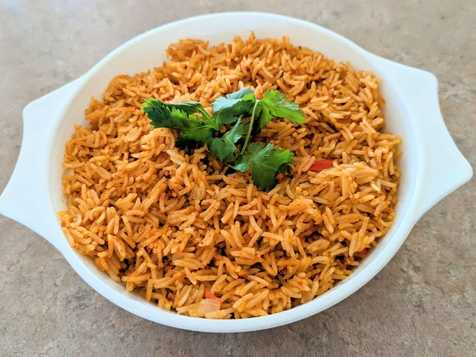

Spanish Rice

Description
This Spanish rice recipe is easy to make and very tasty thanks to the combination of picante sauce and chicken broth.
Ingredients
- Onion and oil: This Spanish rice recipe starts with two tablespoons of chopped onion cooked in olive oil.
- Rice: You'll need 1 ½ cups white rice to serve about five people
- Broth: Use store-bought or homemade chicken broth.
- Ficante sauce: Picante sauce adds rich and slightly spicy flavor to this Spanish rice recipe.
Steps
- Heat oil in a large, heavy skillet over medium heat. Add onion; cook and stir until tender, about 5 minutes.
- Add rice; cook and stir until rice begins to turn golden brown. Stir in chicken broth and picante sauce. Reduce heat, cover, and simmer until liquid has been absorbed, about 15 to 20 minutes.